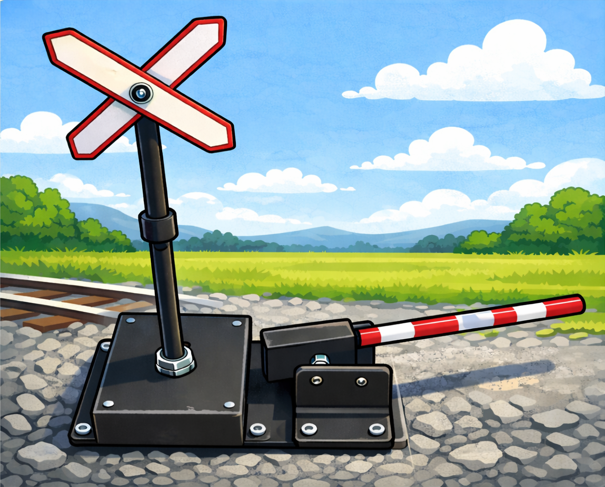
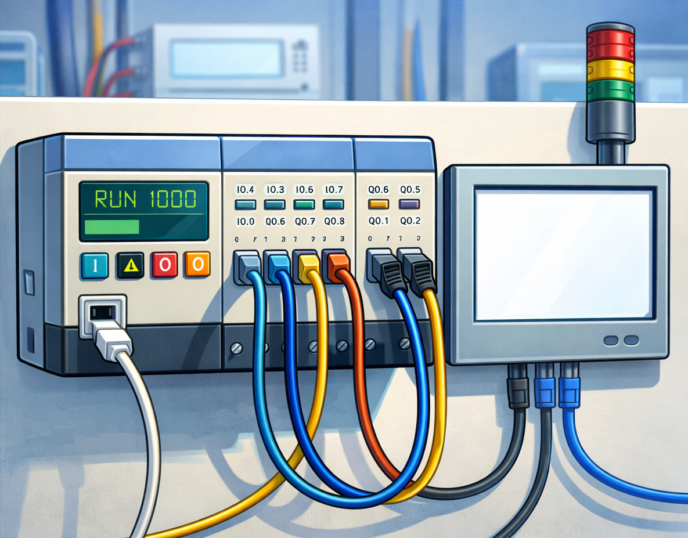
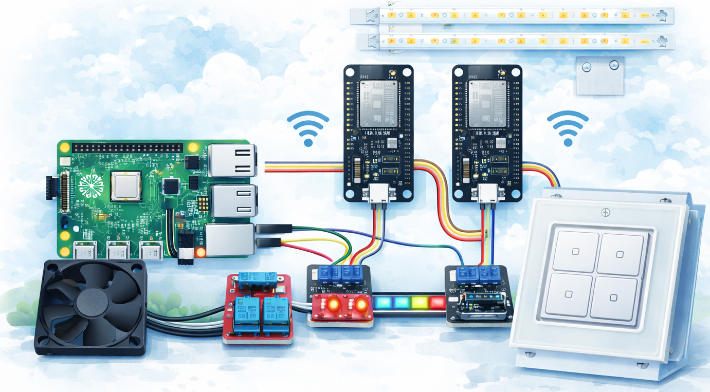
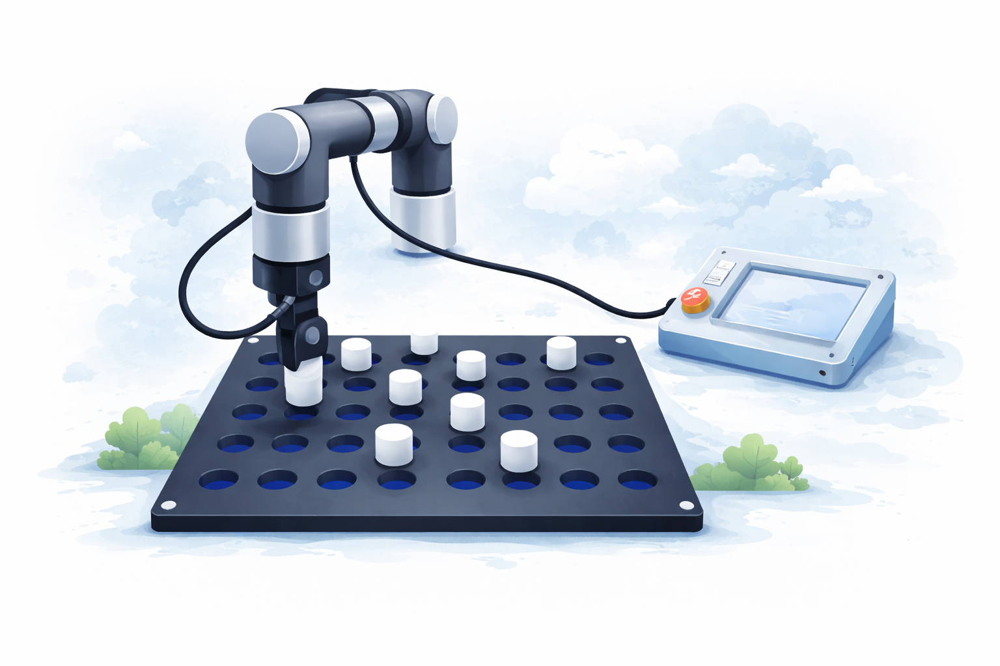

Főoldal
Rólam
Követelmények
Önéletrajz
Tóth Richárd Adrián - Portfólió
Üdvözlöm!
Mindenek előtt szeretnék bemutatkozni!
Tudjon meg többet rólam
Projektjeim
Néhány nagyobb volumenű munkám.

Vasúti átjáró

Automatikus átrakodás
Webszerver készítése

Távolról vezérelt ESP32
Weblapkészítés

R betű kirakás robottal
ᐁ Még több Projekt